WEDDING DAY
今天，為幸福乾杯
2027 年 1 月 23 日（星期六）
16:00
麻將間入席
提早抵達、輕鬆暖場
建議提前抵達18:00
賓客入席
拍照、簽到並找到座位
18:30
婚宴開席
準時共享婚宴與祝福
21:30
送客合影
別忘了留下珍貴合照
Wedding Journey · Macau
把祝福裝進行李，一起前往幸福的目的地。
WEDDING DAY
2027 年 1 月 23 日（星期六）
16:00
提早抵達、輕鬆暖場
建議提前抵達18:00
拍照、簽到並找到座位
18:30
準時共享婚宴與祝福
21:30
別忘了留下珍貴合照
VENUE
錢納利廳 · 2F
澳門友誼大馬路 956–1110 號，鄰近金蓮花廣場與漁人碼頭。週末與活動期間建議多預留 20–30 分鐘。
Google Maps 導航內容會保留在這台裝置
已自動儲存
FLIGHT & TRANSPORT
留足時間，讓旅程從容地開始。
內容會保留在這台裝置
澳門國際機場 → 澳門雅辰酒店
計程車
車程約 15–20 分鐘。車資約澳門幣 100–130 元（機場上車加收 8 元附加費，大件行李每件加 3 元）。
公共巴士 AP1
於「友誼馬路／行車天橋」導航 站下車，步行約 5–10 分鐘可達。車資澳門幣 6 元，不設找零，請自備零錢或使用澳門通。
SLOW TRAVEL GUIDE
從葡式街角到老城煙火，留一點空白給散步。
01 · MAP
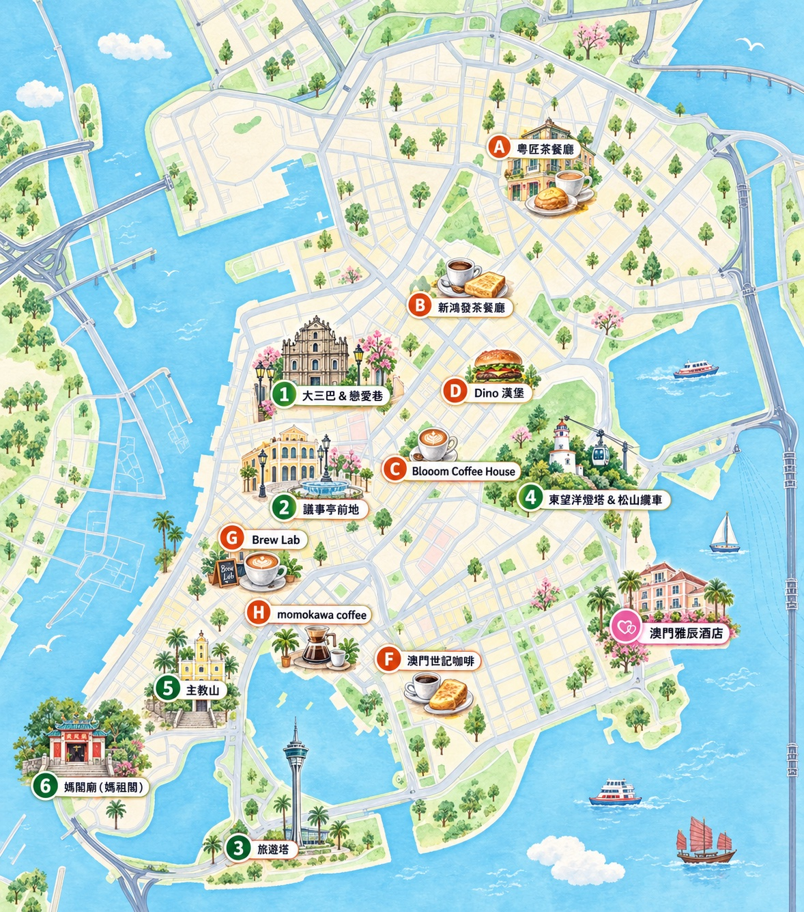
澳門友誼大馬路 956–1110 號
02 · SIGHTS
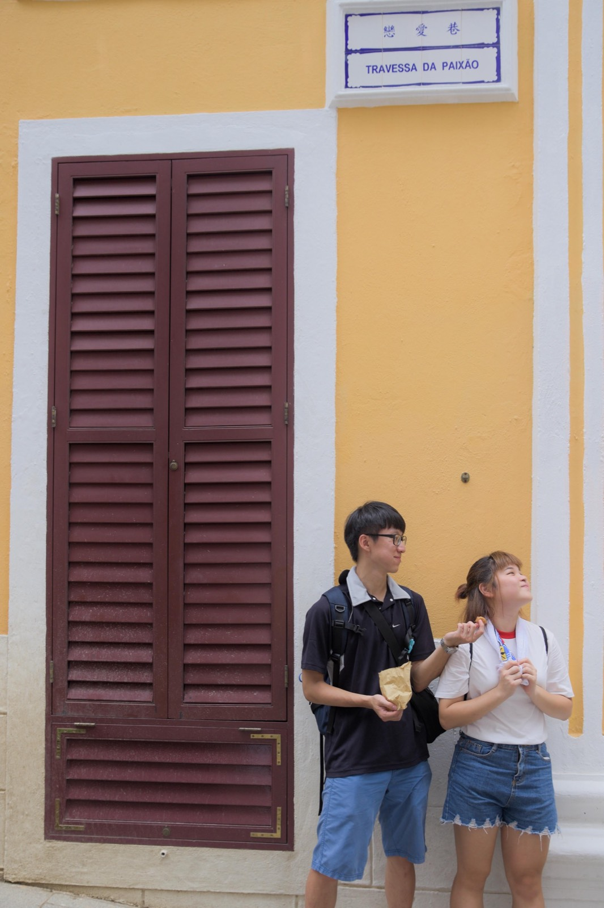
Ruínas de São Paulo & Travessa da Paixão · Ruins of St. Paul's & Lover's Lane
【景點介紹】
大三巴牌坊是聖保祿教堂歷經火災後留下的正面牆體，石雕融合基督宗教與東方花卉意象；緊鄰的戀愛巷是一條黃色階梯小巷，浪漫氛圍是熱門拍照景點。
【冷知識】
1835 年一場大火燒毀整座聖保祿教堂，只留下這片牆與地基，「三巴」其實是「聖保祿」的粵語音譯。
Google Maps 導航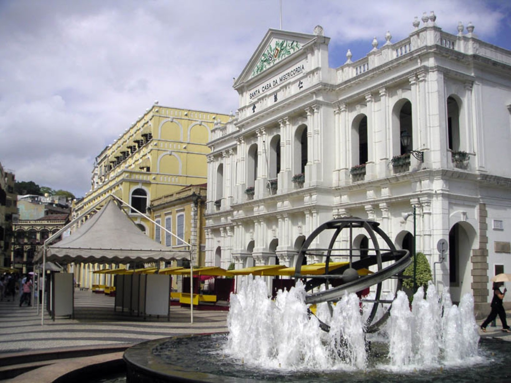
Largo do Senado · Senado Square
【景點介紹】
澳門歷史城區的核心廣場，黑白波浪紋石地與周圍葡式建築相映成趣，是澳門最具代表性的城市地標之一。
【冷知識】
廣場上的波浪形石地圖案模仿葡萄牙里斯本的羅西烏廣場，象徵大航海時代的海浪。
Google Maps 導航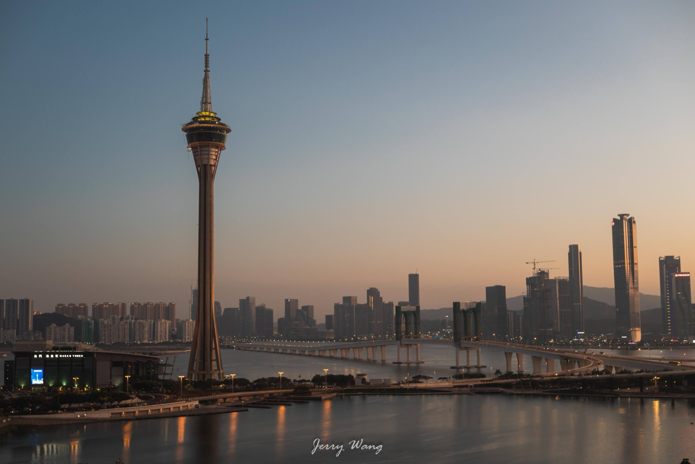
Torre de Macau · Macau Tower
【景點介紹】
高 338 公尺的澳門地標，塔內設有觀光廊與旋轉餐廳，也是全球知名的高空彈跳地點。
【冷知識】
從塔頂進行的高空彈跳落差達 233 公尺，曾被金氏世界紀錄認證為全球最高的商業高空彈跳。
Google Maps 導航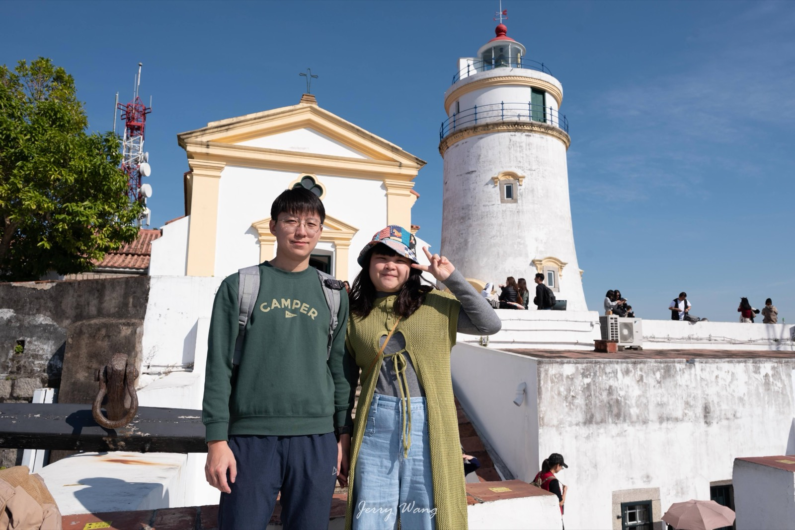
Farol da Guia & Teleférico da Guia · Guia Lighthouse & Cable Car
【景點介紹】
遠東地區最古老的西式燈塔，矗立於松山之巔；搭乘松山纜車可輕鬆登頂，俯瞰澳門全景。
【冷知識】
燈塔建於 1865 年，至今仍在運作，並與周邊教堂、砲台一同列入世界文化遺產「澳門歷史城區」。
Google Maps 導航Colina da Penha · Penha Hill
【景點介紹】
又稱西望洋山，山頂的聖母雪地殿教堂擁有澳門最浪漫的海景視角，可眺望澳門大橋與南灣景色。
【冷知識】
山頂的聖母像面朝大海，相傳是漁民出海時祈求平安歸來的守護地標。
Google Maps 導航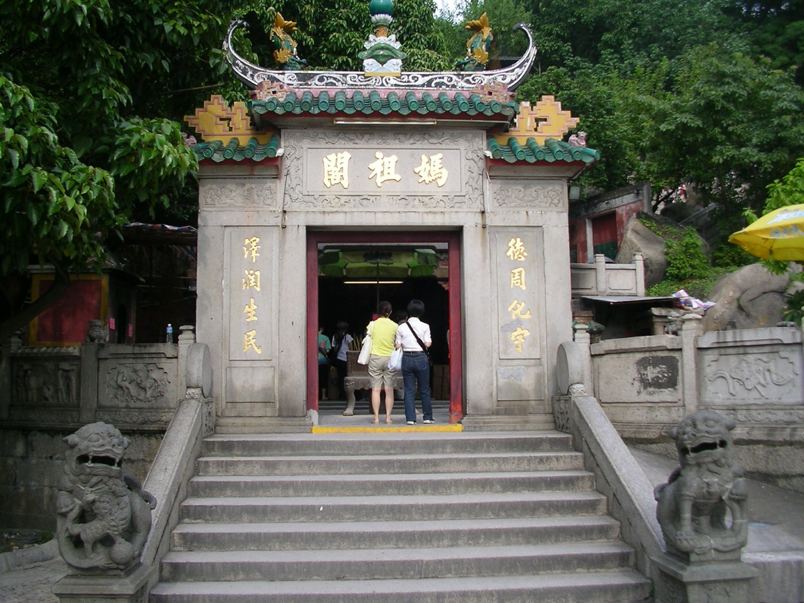
Templo de A-Ma · A-Ma Temple
【景點介紹】
澳門現存最古老的廟宇，供奉海神媽祖，也是「澳門」葡文名稱「Macau」的由來地。
【冷知識】
相傳葡萄牙人登陸時詢問地名，居民誤以為問廟名而答「媽閣」，葡人便以諧音將此地命名為「Macau」。
Google Maps 導航03 · FOOD & CAFE
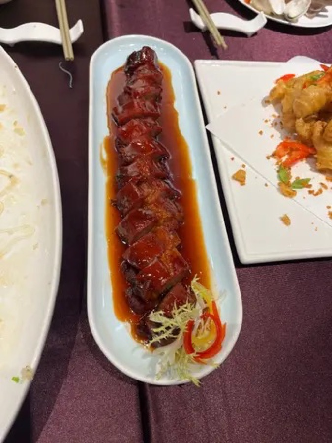
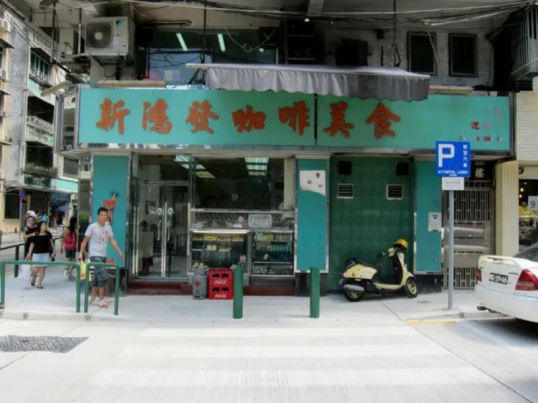
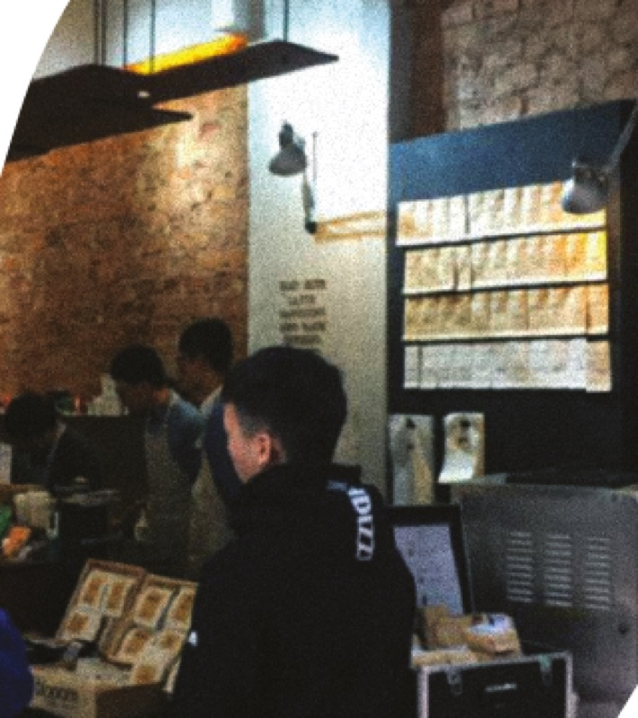
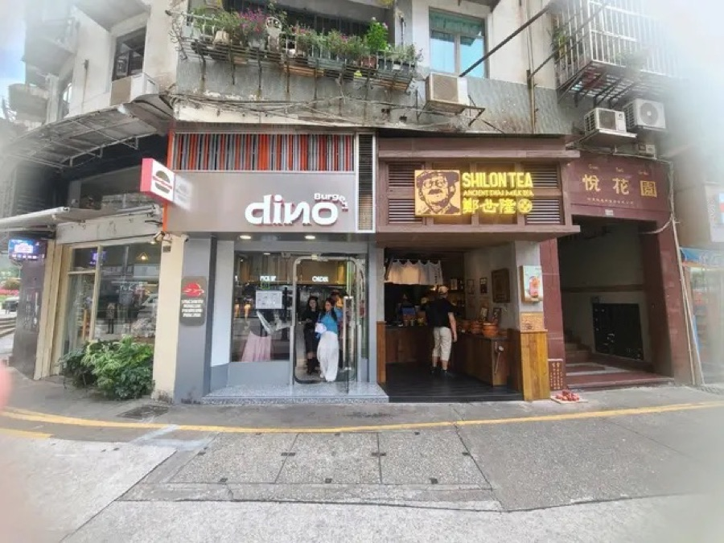
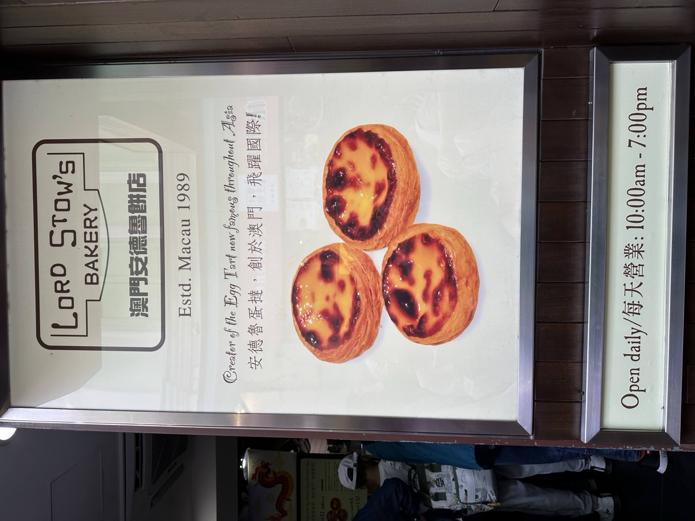
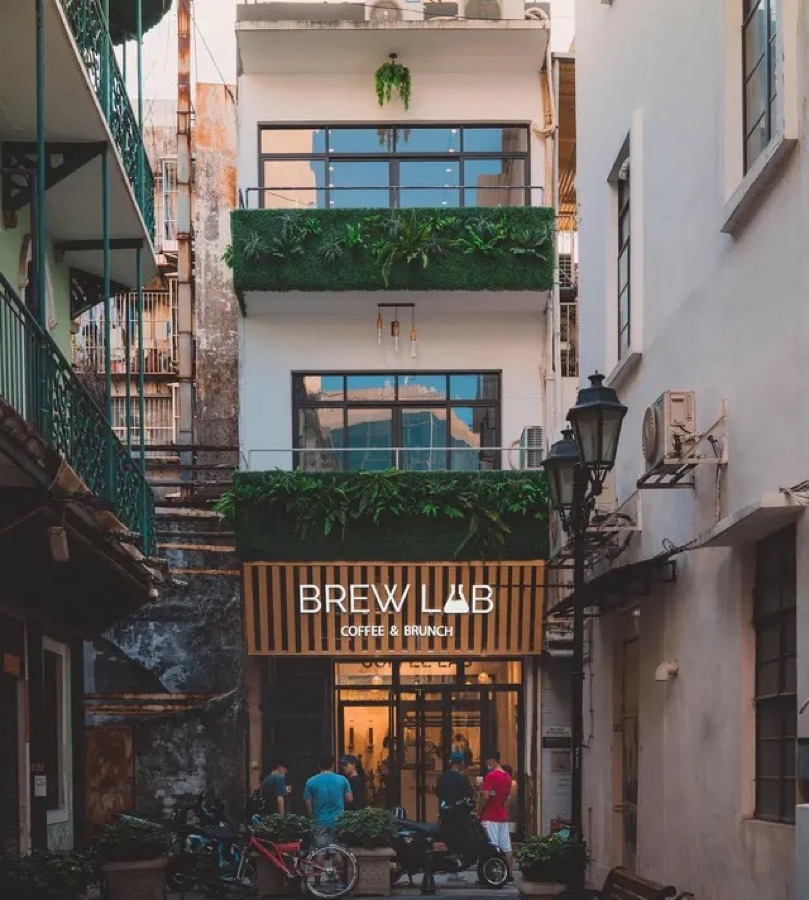
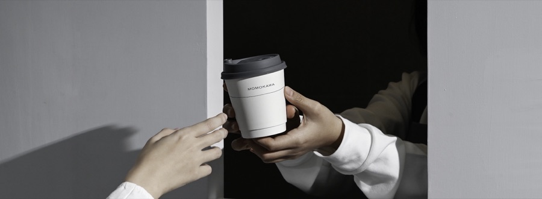
04 · TRAVEL TIPS
交通
公車路線密集；多數飯店提供免費接駁車，時刻表可於櫃檯查詢。
支付
澳門幣（MOP）為主，人民幣、港幣多數店家亦可使用；Visa 卡通用性高。
生活
電壓 220V，插座為三孔英式（G 型），建議自備轉接頭。